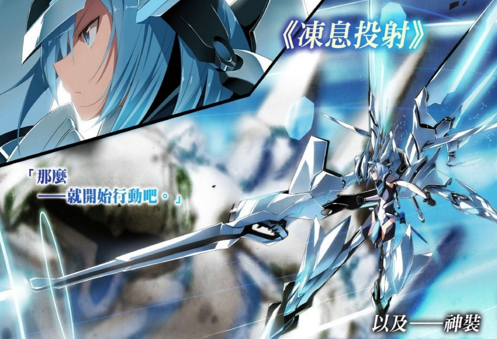

第三章 原始人很了不起吗
和新生想的一样，他的代导人的车子，虽然配备了四个轮子，然后装饰意义大于实用意义，在车发动后轮子就被收到了车子底下，然而车飞起来了。
未来世界的车子，真帅！
“如果你对这车有兴趣，之后我可以借你用用。”
“那个，我没有这种车的驾照……”新生拒收提醒了下对方，自己只是个萌新……好吧，也许并不萌就是了。
“驾照？”月姬露出了诧异的神情，不过在片刻后又释然了，“对了，你们那个时代确实有这样的制度，啧，真是麻烦而无意义的规定，会还是不会，一张废纸说的可不算。”
“废纸……”新生尴尬的笑了笑，他想到了自己曾经的那个柜子里吃灰的英语三级计算机二级等等的一系列不怎么有档次的低级证书……那些玩意，确实没什么意义。
“这个社会的每个人都有一个终生唯一ID，我们的技能培训课报考要求很低，但是教学审核很严格的，不存在摸鱼通过考试的情况，一旦通过技能考试，你所掌握的技能，会直接被登入终端，与你的个人信息绑定，根本用不到那些乱七八糟的证件。”
“那还真是方便啊。”新生点了点头，想到曾经忘记带驾驶证被扣车的事情……我有没有驾照，你们的心里难道就没有B叔？
“你心里装满B叔，我深感欣慰。”月姬突然这样说道，并因此吓了新生一跳。
卧槽！读心吗？
“没错，就是读心。”月姬点了点头，脚踩油门加快车速，同时车的高度也进一步上升，“你有没有驾照这些事，不需要太在意，因为这种低端交通工具根本不需要驾照，看到我们在攀升高度了吧？这个时代，对于这种交通工具的使用有着相当严苛的规定，不同的车速有着不同的空道，由于现在的车型最高时速三百公里每小时，所以从地面十米高度到三百米高度被划分了三十个空道……”
“……别看我现在握着方向盘，实际上我根本无法决定车道，无法按目前的速度随意上下左右移动，每辆车都搭载了专用车用智能终端，确保高速车与低速车不会行驶在同一跑道上，高度的攀升完全由车载终端智能识别，每辆车上还搭载了感应雷达，用以保持车距同时以避免车行高度改变时候不慎与原本车道正常行驶的车相撞发生事故。”
“……”新生皱着眉思索着，听这意思，怎么感觉，这种车其实应该就不需要司机呢。
“没错，确实可以不需要司机。”月姬回过头看着新生肯定了对方的猜测，“其实只要语音告诉车载智能你要去哪里，要什么时候到，智能终端就会自行规划合适的路线规划合适车速，这就是我们无人驾驶技术……自从无人驾驶技术完善后，驾车就没什么乐趣可言了，要不是为了接你，我宁愿去驾驶钢弹也不用这个。”
“啥？”
“Gundam。”
月姬重复了一声后，随手在空气中点了几下向背后甩了下手指。然而新生的眼前突然跳出一个人形机器人的画面。
“高达？！！好帅！！！”对于少女发给自己的图片，新生奉上三十二个赞，机器人可是男人的浪漫，特别是这算可驾驶的款式！
“对，这个名字差不多就是你那个时代前后沿袭下来的。”月姬点了点头，“比起空道被条条框框限制的汽车，高达的使用更为自由，只要不是在人员密集区，其他地方基本可以随便用，当然，相对的，这是必须取得驾驶资格才可以使用的东西。”
“啧！”新生发出可惜的声音，在汽车都自动化的时代，这种机器竟然还需要驾照？果然不愧是高达！
好想要啊！
不过……
买不起！而且，这玩意估计是军用的违禁品才对，根本没有地方能买到……
“这你就想错了，要买这玩意啊，哝，那边的那个大楼就是售卖一家机动战士的。”
“诶？这东西可以买卖的吗？”新生楞了一下。
“为什么不能卖？”月姬瞥了眼新生反问了一句。
“这个民用的话，不是很危险吗？”
“危险？民用款基本配置也就配备了高能光束步枪；3连装超高速运动体穿甲弹；光束军刀；左腕爪状锚这些武装，虽然也能加改，再怎么改都不算危险物品。”
“这还不危险？”新生瞪大眼睛看着月姬，不说不是高达还要加装什么，单单是对方嘴里说的基本配置，已经够吓人了好不！要是有人发起疯了，在被制止前推平几幢楼完全没问题！
“既然是民用机器，高达的终端上当然是被加上了重重限制，让它的武装只能被用于练习与竞技，无法对生物体使用。”
“这样啊……”新生点了点头，稍微赞同了下对方的说法，不过……
“不要担心高达的安全系统被破解，这玩意之所以能被用于民用，圣域自然不会没有相应的管理办法，首先，高达被禁止在密集城市里使用，然后，任何高达的暴走，圣域那边都人都有迅速切断能源供应的方法。脑子正常的人不会用这种低端货闹事。”
高达也算低端？
“当然，这种八百年前在战场上横行的老古董现在早就落伍了！现在的城管用的可是机龙，就算高达暴走，即使不去切断能源供应，他们也能单人拆了高达！”
“机龙？”新生带着些许疑惑的喃喃，完全没有听说过的东西，机器龙吗？
“额，不是机器龙，只是那么叫的而已。”月姬伸出手在空气中点了几下，再次发送了一张图片给新生。
“咦？这能用？？？”新生瞪大眼睛看着被对方成为机龙的武器，乍一看感觉和高达还挺像的，有手有脚有武器，然而，这裸露在外的驾驶位是几个意思？真的和高达打起来，不怕被流弹误伤吗？就算要做的小巧贴身，做成钢铁侠样式也比这玩意好吧？！
“不要小瞧这东西，原始人，有保护使用者的力场存在哦，正面吃一发火箭加农都没问题！”月姬微笑着对着新生摇了摇食指。
“……”新生沉默了下来，他差点忘了，这已经一千年以后的世界了……
“不亏是未来啊！”X2
“……”新生再次沉默了下来，抬头看向月姬，张了张嘴，犹豫了一下后终于鼓起勇气说道，“给我点隐私好不好？”
“你自己不关闭公屏怪谁？”月姬撇了撇嘴。
你没告诉我怎么关啊！
“自己不会研究吗？”
我是原始人啊！
“哦！”
【我会把这些试阅移到专门卷的，暂时放这里只是为了阅读方便】【估计你们知道高达不知道机龙】【最近花了很多时间在补充文学修养呢，嗯，是文学修养……】